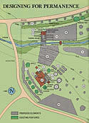
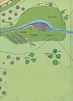

Gardeners are learning to plan for sustainable agriculture . . . beginning in their back yards.
Readers of this magazine are no doubt familiar with the word permaculture. . . the term coined by Bill Mollison (see MOTHER NO. 66, page 14 and No. 72, page 142) to describe his concept of a self-sustaining, consciously designed approach to agriculture. Mollison claims that the permaculturist can weave together the elements of microclimate design, annual and perennial plant use, water and soil management, and human needs . . . forming an energy-efficient, low-maintenance, high-yielding, and intricately interconnected system.
Well, it seems that the Australian gardener's ideas have caught the attention of a good many folks in this country. As a result of Mollison's visits to the United States in 1980 and again in 1981, a number of regional permaculture centers (see the accompanying sidebar) have been established, and workshops are being conducted - throughout North America - to acquaint more people with the rudiments of eco-agricultural design.
In fact, last April John Quinney, of the New Alchemy Institute (see MOTHER NO. 61, page 118), led a five-day seminar at the New Homestead School near Murphy, North Carolina. As part of the course, the participants (including a MOTHER staffer, Emily Stetson) pooled their newly learned skills and developed a permaculture design for the school's site . . a 3.8-acre spread consisting primarily of gently rolling pastureland. We've reproduced the results of that study in the following pages because we feel that, while it is only a preliminary plan (owing to the time and resource limitations of the course), it can nonetheless serve as an excellent illustration of exactly how anyone, regardless of time and money restrictions, might apply the principles of permaculture to his or her own land.
Mollison's system differs from conventional agriculture primarily in the emphasis it places on skilled design, planning which must be attempted only after thoughtful and prolonged observation. The placement of elements in a landscape, their relationship to each other, and their evolution over time are all taken into consideration.
In addition, an effective permaculture design must be developed in concert with the people who'll be implementing it. Therefore, in planning their layout, the students worked closely with Mike Oliphant and Martha Dysart (who run the New Homestead School) to develop realistic goals for the site. The couple's intentions were to provide a year-round food supply for their family (with enough surplus to feed students attending the courses), to furnish a forum for teaching, and to reduce their energy needs . . . all while operating on a limited budget. To meet these requirements, they determined to make full use of both on-site and local resources.
The starting point for the design process, therefore, was to collect data - through careful observation - on the school's landscape and on the nearby community. On-site resources included vegetation (elderberries, blackberries, and wild strawberries . . . persimmon, oak, hickory, and black walnut trees . . . and pastureland), a spring, a year-round stream, southern exposure, a temperate climate, a large farmhouse, and an existing goat barn. Numbered among the local "plus factors" were farmers' markets . . . sources of free or inexpensive building supplies, organic matter, and firewood . . . and a community of skilled farmers and crafts people.
So, keeping the goals and the available resources in mind, the students applied permaculture principles to devise a sustainable agricultural design for the site. To begin, the landscape was divided into zones of energy intensity, assuring that those elements requiring the most human labor would be located close to the house, while those needing less attention could be situated away from the hub of activity. For example, as shown on the map, the herb and salad gardens (which are harvested daily during the growing season) are placed near the kitchen . . . whereas lowmaintenance tree crops are situated on a more remote section of the property.
Click image to enlarge view
The group's second principle was to position all landscape elements-hedges, fences, poultry and goat ranges, etc.-in such a way that they could each serve as many functions as possible. For instance, the Siberian pea shrub hedge keeps the chickens in their run, shelters the poultry range from winds, provides bee forage, fixes nitrogen for nearby plants, and furnishes food for hens and humans.
Next, because a good design takes advantage of all site resources (and especially those generally regarded as problems), the group had to alter its collective perception of some of the "negative" aspects of the landscape. For example, although the honeysuckle growing abundantly on the homestead spreads rapidly and can strangle young trees, it also serves as an erosion control and is a source of goat forage . . . and therefore, it can be seen as a useful - as well as decorative and pleasant-smelling - contribution to the overall design.
The group was also reminded that a permaculture system must favor diversity over monoculture. The particular arrangement of different species, however, must be carefully designed for each site, and the number of elements in the landscape isn't as important as the number and quality of the linkages among them. By combining a chicken coop with a greenhouse, garden, and mulch area, for instance, several benefits are attained: The poultry shed is warmed in winter by the greenhouse . . . the weed seeds in the mulch (and some of the insects in the garden) are consumed by the fowl . . . and the chickens provide manure for fertilizer.
Finally, the plants and animals were evaluated for their function as well as for their food potential so that - whenever possible - the work of farming could be performed by the nonhuman elements of the system. Accordingly, the geese are regarded as weeders, grazers, and consumers of windfall fruits . . . plants as nitrogen fixers and living fences . . . and so on.
By adhering to these principles, and keeping in mind the goals for the site and the resources at hand, the students came up with the following preliminary design, to which more details will be added as the land develops over several years. After carefully inspecting the map and making some observations about your own piece of property, we think you'll agree that one of the most exciting aspects of permanent agriculture is that it makes sense. . . and its ideas can be applied to any area, whether it be in the country or the city. In fact, it seems that if we could all begin - in our own back yards - to maximize the resources we already have (while minimizing the use of added energy), a self-nurturing, more humane agricultural system could become a reality.
TO FIND OUT MORE. . .
A number of permaculture centers have been formed in this country, and the folks in these groups can give you information about the various publications available, and details o the courses and workshops being held. Anyone interested in learning more about permaculture should contact either North American Permaculture (Dept. TMEN, P.O. Box 1100, Winters, California 95694) or the nearest regional center. (Enclose a stamped, self-addressed envelope with your inquiry.)
DUMP HEAP Permaculture
Dept. TMEN
2950 Walnut Boulevard
Walnut Creek, California 94596
Gap Mountain Permaculture
Dept. TMEN
RFD 1, Box 240A
Jaffrey, New Hampshire 03452
Great Lakes Permaculture
Dept. TMEN
1480 Cedar Bend Drive
Ann Arbor, Michigan 48105
Long Branch Permaculture
Long Branch Environmental
Education Center
Dept. TMEN
Rt. 2, Box 132
Leicester, North Carolina 28748
Maritime Permaculture
Dept. TMEN
P.O. Box 7611
Olympia, Washington 98507
Ozark Permanent Culture Society
Dept. TMEN
Box 231
Jamestown, Missouri 65046
Permaculture Molokai Hawaii
Dept. TMEN
P. O. Box 246
Kualapuu, Maui, Hawaii 96757
TreePeople Permaculture
Dept. TMEN
12601 Mulholland Drive
Beverly Hills, California 90210
|
 |
 |
|